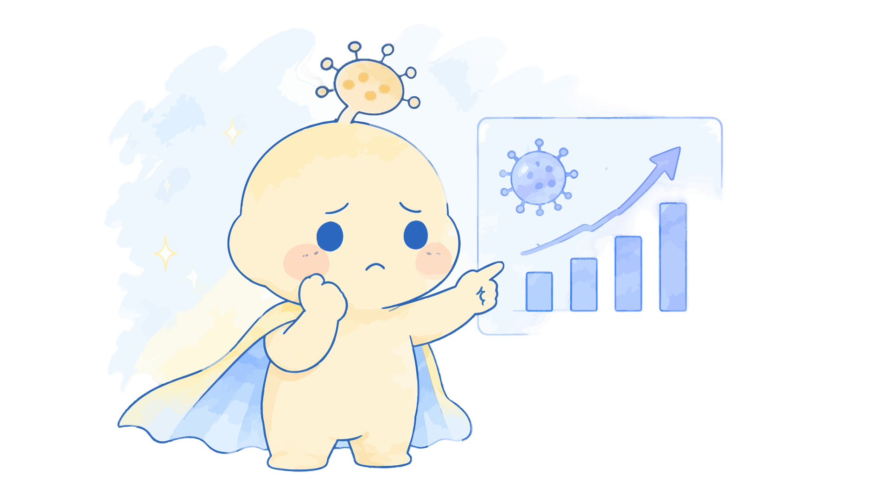
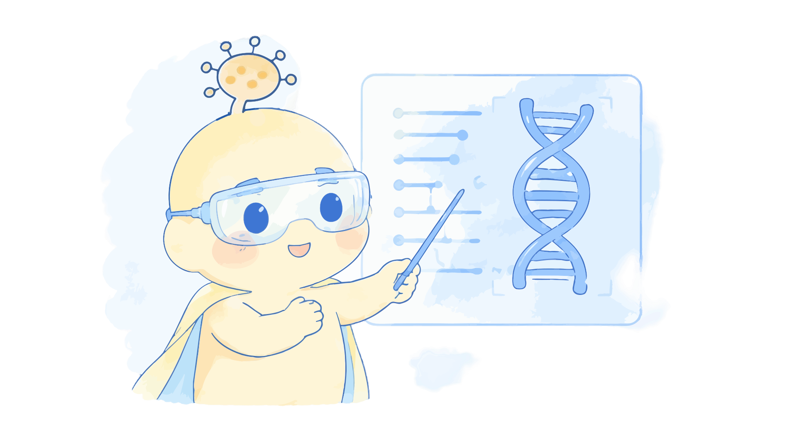
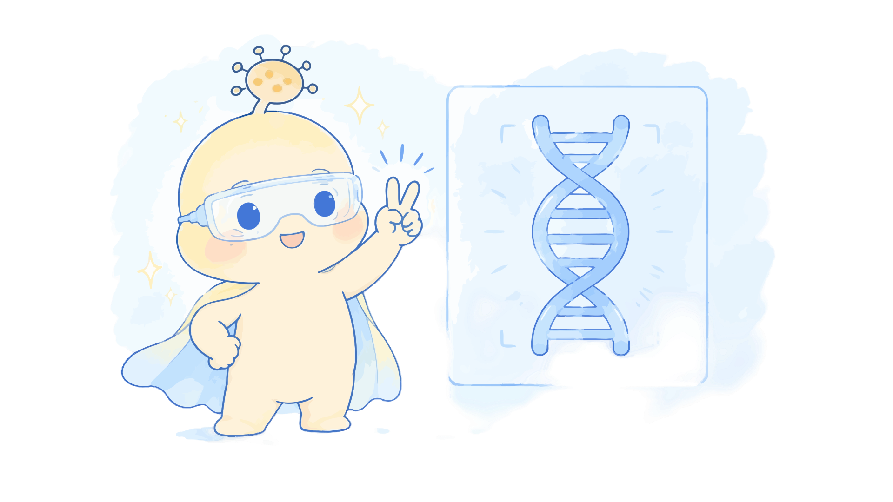

跨学科协作
合成生物学、计算机建模、硬件设计与社会调查成员协同推进，形成从元件到社会的完整闭环。
iGEM SZPU-2026
PAGER 策略 · 抗 HA 纳米抗体 · 人源化 GPCR/G 蛋白 · 双模式 FUS1 报告系统
Start Journey
甲型流感病毒（Influenza A virus, IAV）是季节性流行与反复引发公共卫生应急事件的主要病原体之一。H1N1 亚型在历史上多次造成大流行，其快速变异与呼吸道传播特性使得早期、低成本的现场筛查成为疫情防控的关键缺口。现有临床检测方法在灵敏度、成本、通量与便携性之间难以兼顾，限制了基层医疗、校园、口岸等场景的快速响应能力。
纳米抗体（Nanobody）：源自骆驼科重链抗体的可变区（VHH），分子量约 12–15 kDa，具有热稳定性高、可溶性好、易于原核/真核表达等优势，是构建模块化抗原识别单元的理想候选。
[待补充：目标地区流感发病率、检测可及性调研与具体使用场景]
我们在酿酒酵母 Saccharomyces cerevisiae BY4741 中搭建基于 PAGER（Protein-fragment Assisted Interaction Reporter）策略的 H1N1 血凝素（HA）识别回路。该设计将酵母天然交配信息素通路改造为“抗原解锁-发光”检测平台：无 HA 抗原时，MT1 抑制肽持续占据人源化 hM1Dq 受体的正构位点，下游 G 蛋白级联处于关闭状态；当病毒 HA 被膜表面展示抗 HA 纳米抗体捕获后，产生的空间位阻将 MT1 抑制肽物理推开，解除自抑制，DCZ 激动剂即可激活 hM1Dq，进而通过 Gpa1-Gαq 嵌合蛋白触发 FUS1 启动子，驱动 yEGFP 或 lacZ 报告基因表达。
GPCR（G 蛋白偶联受体）：七跨膜受体超家族，可将胞外化学信号转导至胞内异源三聚体 G 蛋白，进而调控下游效应器与基因表达。本项目利用其高度可工程化特性，将病毒抗原识别事件转化为可定量的荧光输出。
[待补充：各元件完整序列、Western Blot 表达验证与剂量-反应曲线]

项目以 Design–Build–Test–Learn（DBTL）工程循环为框架，将复杂的合成生物学目标拆分为可独立验证的模块。整个湿实验链从 PAGER 融合蛋白基因的设计与合成出发，经过大肠杆菌质粒扩增与酶切验证、酵母底盘 CRISPR 改造与同源重组人源化、蛋白表达验证，最终进入生物传感器的功能诱导与双模式信号检测。
Orthogonality（正交性）：指外源信号通路与宿主内源通路之间的交叉干扰最小化。敲除 STE2 消除内源 α-factor 受体信号、敲除 Sst2 解除 G 蛋白负调控、敲除 FAR1 解除细胞周期阻滞，均是为了在维持细胞正常生长的同时，让 PAGER 通路成为主导且可控的信号来源。
[待补充：原始实验记录（Team Member, Lab Notebook Date）与原始数据文件]

截至目前，项目已完成 PAGER 融合蛋白基因的合成与大肠杆菌层面的质粒验证，为后续酵母转化与底盘改造奠定了材料基础。CRISPR-Cas9 三基因敲除模块在首次酶切验证失败后，正在进行 sgRNA 载体重建与转化条件优化。所有荧光定量结果将在完成底盘改造、获得不少于三次独立重复、设置完整对照组并标注误差棒（SD 或 SEM）后统一上传。
[待补充：流式细胞术定量数据（n ≥ 3，含阴性/空载体/阳性对照）、剂量-反应曲线、误差棒定义与统计分析]
本项目严格遵循 iGEM 安全白皮书与所在学校生物安全管理制度。所有遗传操作均在标准分子生物学实验室内完成，使用 BSL-1 模式生物酿酒酵母 BY4741；病毒相关实验仅使用灭活病毒组分或假病毒系统，不涉及活病毒释放、环境暴露或人类细胞感染实验。
Containment（生物安全防护）：通过物理隔离（生物安全柜）、生物屏障（营养缺陷型与温度敏感型设计）和标准化废弃物处理，防止工程生物体意外释放或对环境造成影响的综合实验管理策略。
[待补充：iGEM 安全审查表、结构建模所用 PDB 模板、序列一致性、模型置信度评估（pLDDT/QMEANDisCo）]
项目通过专家访谈、问卷调研与科普 outreach 活动，将技术设计与真实社会需求持续对齐。来自临床检验、疾控与基层医疗的反馈帮助我们识别出现有检测在基层可及性、成本与周转时间上的痛点；面向中学生的科普活动则让我们意识到“可视化、低成本、无需复杂设备”是公众对生物传感器最直观的期待。这些输入共同将项目目标校准为“快速、可部署、可模块化的广谱呼吸道病原体监测平台”。
[待补充：访谈对象单位与职称、问卷样本量、反馈编码方法与主要主题提炼]
完成 H1N1 概念验证后，PAGER-Yeast 平台的核心价值在于其模块化与可替换性：膜表面的纳米抗体识别单元可针对不同抗原快速迭代，而下游的 GPCR 信号重布线与双模式报告系统保持通用。结合低成本便携式荧光读数设备，该体系有望从实验室原型走向基层可用的现场检测工具。
[待补充：目标拓展亚型列表、硬件原型参数、产品化时间表与监管路径初步评估]
合成生物学、计算机建模、硬件设计与社会调查成员协同推进，形成从元件到社会的完整闭环。
每个设计决策均对应可测试假设与迭代计划，确保项目可追溯、可复现、可改进。
专家与公众反馈持续塑造项目目标与产品形态，使技术方案贴近真实使用场景。
.png)
.jpg)